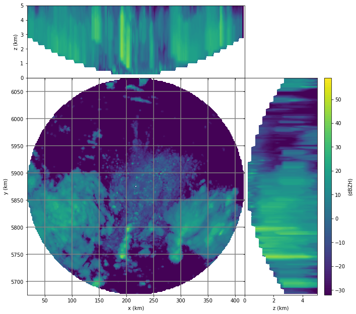

Recipe #2: Reading and visualizing an ODIM_H5 polar volume¶
This recipe shows how extract the polar volume data from an ODIM_H5 hdf5 file (KNMI example file from OPERA), contruct a 3-dimensional Cartesian volume and produce a diagnostic plot. The challenge for this file is that for each elevation angle, the scan strategy is different.
In [2]:
import datetime as dt
from osgeo import osr
# read the data (sample file in WRADLIB_DATA)
filename = wrl.util.get_wradlib_data_file('hdf5/knmi_polar_volume.h5')
raw = wrl.io.read_OPERA_hdf5(filename)
# this is the radar position tuple (longitude, latitude, altitude)
sitecoords = (raw["where"]["lon"][0], raw["where"]["lat"][0],
raw["where"]["height"][0])
# define your cartesian reference system
# proj = wradlib.georef.create_osr(32632)
proj = osr.SpatialReference()
proj.ImportFromEPSG(32632)
# containers to hold Cartesian bin coordinates and data
xyz, data = np.array([]).reshape((-1, 3)), np.array([])
# iterate over 14 elevation angles
for i in range(14):
# get the scan metadata for each elevation
where = raw["dataset%d/where" % (i + 1)]
what = raw["dataset%d/data1/what" % (i + 1)]
# define arrays of polar coordinate arrays (azimuth and range)
az = np.arange(0., 360., 360. / where["nrays"])
r = np.arange(where["rstart"],
where["rstart"] + where["nbins"] * where["rscale"],
where["rscale"])
# derive 3-D Cartesian coordinate tuples
xyz_ = wrl.vpr.volcoords_from_polar(sitecoords, where["elangle"],
az, r, proj)
# get the scan data for this elevation
# here, you can do all the processing on the 2-D polar level
# e.g. clutter elimination, attenuation correction, ...
data_ = what["offset"] + what["gain"] * raw[
"dataset%d/data1/data" % (i + 1)]
# transfer to containers
xyz, data = np.vstack((xyz, xyz_)), np.append(data, data_.ravel())
# generate 3-D Cartesian target grid coordinates
maxrange = 200000.
minelev = 0.1
maxelev = 25.
maxalt = 5000.
horiz_res = 2000.
vert_res = 250.
trgxyz, trgshape = wrl.vpr.make_3D_grid(sitecoords, proj, maxrange,
maxalt, horiz_res, vert_res)
# interpolate to Cartesian 3-D volume grid
tstart = dt.datetime.now()
gridder = wrl.vpr.CAPPI(xyz, trgxyz, trgshape, maxrange, minelev,
maxelev)
vol = np.ma.masked_invalid(gridder(data).reshape(trgshape))
print("3-D interpolation took:", dt.datetime.now() - tstart)
# diagnostic plot
trgx = trgxyz[:, 0].reshape(trgshape)[0, 0, :]
trgy = trgxyz[:, 1].reshape(trgshape)[0, :, 0]
trgz = trgxyz[:, 2].reshape(trgshape)[:, 0, 0]
wrl.vis.plot_max_plan_and_vert(trgx, trgy, trgz, vol, unit="dBZH",
levels=range(-32, 60))
3-D interpolation took: 0:00:35.334988

Note
In order to run the recipe code, you need to extract the sample data
into a directory pointed to by environment variable WRADLIB_DATA.